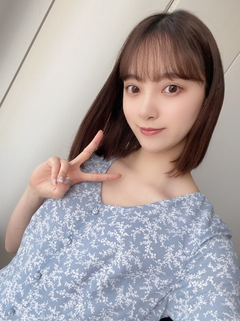

2020/0504Mon考えるのはスキ考えすぎるのはニガテ
写真集のタイトル、表紙解禁の
反響嬉しいです!
ありがとうございます☺︎
さて、
今日は私が人として女性として女優として
尊敬するオードリーヘップバーンさんの
お誕生日です
実は写真集のTwitterを見ていただいた方は
お気づきになっているかもしれませんが
5月27日発売2nd写真集内に
オードリーヘップバーン
リスペクトページもあります
" ティファニーで朝食を "
のオマージュをしてます☺︎ 是非見てね
オードリーヘップバーンさんの
圧倒的な美しさと存在感と生命力と強さ
見た目ももちろん美しいのですが
滲み出る内面からの美しさに
魅力を感じます
そして考え方や生き方にも沢山の事を
学びました
本を読んだり映画を観たりして彼女のことを
本を読んだり映画を観たりして彼女のことを
知る度にこんな女性になりたい!と思います
特にすきな名言(有名なのでご存知な方も多いかな)
今日はご紹介します❤︎
チャンスは滅多にめぐってこない。だから、いざめぐってきた時にはしっかりつかまなければならない
人生について深刻に考えたりはしないけど...私の人生で何をするかは真剣に考えているわ
不可能なことなどないわ。Impossible（不可能）という単語自体に、I'm possible（私にはできる）と書いてあるのだから
愛とは行動。口先だけのものではないの。言葉だけで済んだことなんて一度もなかった
最高の勝利は、自分の欠点を受け入れられ、ありのままの自分で生きられるようになったこと
歳を重ねると、自分に手が2つあることを知るはず。1つは自分自身を助けるため、もう1つは他者を助けるために
一番好きなことは笑うこと。人として最も大事なことじゃないかしら
全部が素敵な言葉すぎて...
歳を重ねると、自分に手が2つあることを知るはず。1つは自分自身を助けるため、もう1つは他者を助けるために
一番好きなことは笑うこと。人として最も大事なことじゃないかしら
全部が素敵な言葉すぎて...
常に心に置いておきたい言葉です

強さと優しさを兼ね備えた
厚みのある人になれるよう私もがんばらなきゃ!

お猿さんの名前 " もんぞー "
にきまりました☺︎
たくさんのご意見ありがとうございました!
もふもふしていてきもちいのでつい
もふもふしていてきもちいのでつい
つぶれちゃうんじゃないかっていうくらい
ぎゅーと抱きしめながら寝ています
お昼も、もんぞーをギュッとしたまま
ゲームしていました笑
あ！あの！
プレステ4
DS
switch のおすすめソフト教えてください!
ゲーム元々好きなんですけど
最近おうち時間利用してまたやりだしたので!
ちなみにやってた(やってる)
ゲームソフトの一部↓
どうぶつの森
荒野行動
ナルト
スマッシュブラザーズ
バイオハザード
気になるのは
マインクラフト
スプリンターセル
デスストランディング
メタルギア
ホラーゲーム
謎解き系
闘う系かなぁ
バイオハザードRe:3は7を
クリアしたら手つけます!笑
推しゲーム
教えてください❤︎


でははは
2020/05/04 19:52
コメント(933)
もんぞーっていい名前ですね！！
マインクラフトは自由に遊べるので凄く楽しいのでお勧めします。今日もブログ更新ありがとうございます！！(^.^)
マインクラフトは自由に遊べるので凄く楽しいのでお勧めします。今日もブログ更新ありがとうございます！！(^.^)
僕も荒野行動やってます。ゲーム楽しいですよね
ありのままの自分で生きる、欠点を受け入れる、僕も目指したい生き方です。達成出来た時この世で無敵になれそうなメンタルですね
いつもブログありがとうございます
おすすめのゲームについて(ps4しかやっていないのでps4のみ！)
未央奈さんが好きそうなホラー系
・シャドーコリドー 影の回廊 (和風ホラー 2000円です！)
・psycho break2
・the last of us
謎解き＆アクション＆雰囲気最高ゲー
・ワンダと巨像(激推しします)
・ICO
・人喰いの大鷲トリコ
アクション＆雰囲気暗め
・bloodborne
また思いついたら書きます！
なにか始めたら教えてくださいね〜ではぁ
マユネーズ
いつもブログありがとうございます
おすすめのゲームについて(ps4しかやっていないのでps4のみ！)
未央奈さんが好きそうなホラー系
・シャドーコリドー 影の回廊 (和風ホラー 2000円です！)
・psycho break2
・the last of us
謎解き＆アクション＆雰囲気最高ゲー
・ワンダと巨像(激推しします)
・ICO
・人喰いの大鷲トリコ
アクション＆雰囲気暗め
・bloodborne
また思いついたら書きます！
なにか始めたら教えてくださいね〜ではぁ
マユネーズ
もんぞーいいなぁ、可愛いなぁ
ウイニングイレブンめっちゃ面白いですよー！
サッカーやってるからかもだけど笑笑
ウイニングイレブンめっちゃ面白いですよー！
サッカーやってるからかもだけど笑笑
PS4でマインクラフトとモンハンワールドとApex Legendsがおすすめです！
未央奈！
写真集絶対買うね！
体調に気を付けて頑張って
大好き
また握手会行けるようになったら行くね！
写真集絶対買うね！
体調に気を付けて頑張って
大好き
また握手会行けるようになったら行くね！
apexおすすめですよ！
ブログ更新ありがとうございます
APEXって言う、ps4などでできるゲームおすすめですよ！
今日はヘップバーンのお誕生日でしたか。
明日は与田ちゃんのお誕生日ですね！
もんぞー、意外や意外、食べ物の名前ではなかったんですねー。
DSのおすすめは、レイトン教授シリーズですかねー。
パズルや頭の体操が好きだったら、ハマると思います♪☆
明日は与田ちゃんのお誕生日ですね！
もんぞー、意外や意外、食べ物の名前ではなかったんですねー。
DSのおすすめは、レイトン教授シリーズですかねー。
パズルや頭の体操が好きだったら、ハマると思います♪☆
デッドバイデイライトがおすすめ！！！
好きです
写真集楽しみにしてます
写真集楽しみにしてます
ブログ更新ありがとうございます！
1日二回もあげてくれるのは神です！
未央奈さんからも美しさが滲み出てますよ！
もんぞーかわいい名前ですね
自分も結構ゲーム好きなんですよ！！
スマブラと荒野は自分もやっていてオススメはマリオカートとスプラトゥーンです！機会があったらぜひこの機会にやってみてください！
次のブログも楽しみにしてます！！
1日二回もあげてくれるのは神です！
未央奈さんからも美しさが滲み出てますよ！
もんぞーかわいい名前ですね
自分も結構ゲーム好きなんですよ！！
スマブラと荒野は自分もやっていてオススメはマリオカートとスプラトゥーンです！機会があったらぜひこの機会にやってみてください！
次のブログも楽しみにしてます！！
Fortniteをおすすめします！
このゲームは携帯、switch、PS4、パソコンのどの端末とも通信できますよ！メンバーともスクワッドを組んで戦えます
撃ち合うだけでなく、壁を立てたり建築もする事で敵からの攻撃を防いだりできるので楽しいです、ちなみに日向坂メンバーではやっている方が結構いるらしいです！！
このゲームは携帯、switch、PS4、パソコンのどの端末とも通信できますよ！メンバーともスクワッドを組んで戦えます
撃ち合うだけでなく、壁を立てたり建築もする事で敵からの攻撃を防いだりできるので楽しいです、ちなみに日向坂メンバーではやっている方が結構いるらしいです！！
お疲れ様です!
PS４だと圧倒的に ドラクエ11 がおすすめです！！
時間が経つのを忘れるぐらい楽しくてやりこみ要素も深いのでおうち時間にぴったりだと思います！！
おうち時間楽しんでください！応援してます！
時間が経つのを忘れるぐらい楽しくてやりこみ要素も深いのでおうち時間にぴったりだと思います！！
おうち時間楽しんでください！応援してます！
またブログ更新してくれて嬉しい〜(^｡^)
マリカー8DX
未央奈可愛いいー！
おすすめのゲームは
ファイナルファンタジーとポケモンです。
体調には気を付けてください！
おすすめのゲームは
ファイナルファンタジーとポケモンです。
体調には気を付けてください！
switchとPS4なら色々ゲーム知ってるので好きになりそうなゲーム紹介します！！
【switch】
ファイアーエムブレム風花雪月
シミュレーションRPG。
主人公が教師になって仲間のキャラ(生徒)を育てるため、
キャラに対する思入れが深くなる。
中世のような世界観。
【PS4】
ペルソナ5 ※1番おすすめです。
RPG。
シリーズ物だがストーリーは繋がってないので、
今作から始められる。
現代の高校を舞台に、ペルソナという能力を使って、
自分の過去に向き合っていくストーリー。
【switch/PS4両方】
dead by daylight
サバイバルホラー。
1対4(キラー対サバイバー)で戦うオンラインゲーム。
有名芸能人も動画配信サイトで実況など初めている。
【switch】
ファイアーエムブレム風花雪月
シミュレーションRPG。
主人公が教師になって仲間のキャラ(生徒)を育てるため、
キャラに対する思入れが深くなる。
中世のような世界観。
【PS4】
ペルソナ5 ※1番おすすめです。
RPG。
シリーズ物だがストーリーは繋がってないので、
今作から始められる。
現代の高校を舞台に、ペルソナという能力を使って、
自分の過去に向き合っていくストーリー。
【switch/PS4両方】
dead by daylight
サバイバルホラー。
1対4(キラー対サバイバー)で戦うオンラインゲーム。
有名芸能人も動画配信サイトで実況など初めている。
オードリー・ヘップバーン大好きです。
キュート可愛い彼女、髪型も好きです。
写真集おめでとう。
待っていました。
キュート可愛い彼女、髪型も好きです。
写真集おめでとう。
待っていました。
ダークソウルシリーズとAPEXレジェンズ！！
PS4はモンハン、セキロウ、ダークソウルです！
ブログ更新ありがとうございます！！
初めてこんなに早く見れた！！！
写真集の表紙とタイトル最高です！
早くみたい！！！
今の未央奈ちゃんの前髪の作り方知りたいです！
初めてこんなに早く見れた！！！
写真集の表紙とタイトル最高です！
早くみたい！！！
今の未央奈ちゃんの前髪の作り方知りたいです！
お猿さんの名前もんぞーに決めたんだ！良いね面白い名前だね！堀ちゃんは可愛いなー！体に気をつけてください！応援してまーす
メタルギアは、ガチで面白いですよー。
ゲーム内で出てくる名言も良いものばかりです。
個人的にはメタルギアソリッド2をオススメしたいです！
ゲーム内で出てくる名言も良いものばかりです。
個人的にはメタルギアソリッド2をオススメしたいです！
もんぞー、いい名前ですね。Switchだとポケモン、スプラトゥーン2、スマブラなどがオススメです。
舌だし顔、おちゃめでカワイイ
もんぞー！
かわいいね！
いい名前だ〜
ゲームか〜全部楽しくて選べんな〜
じゃバイバーイ
かわいいね！
いい名前だ〜
ゲームか〜全部楽しくて選べんな〜
じゃバイバーイ
堀ちゃんだいすちこと、モンブランです！
改めまして、、よろしくお願いします！ 好きなものについて考えていたら、モンブランにたどり着きました！
好きなゲームは、とび森！！
スイッチ持ってないから、あつまれは出来なくて涙。。
だからとび森やってます！
★推しゲームは、クロックタワー！昔のだけど実況が楽しい！未央奈ちゃんもプレイしてみてね！♥
お猿さんはもんぞーくんになったんだね！可愛い♡
ではでは。堀ちゃんだいすちことモンブランでした！沢山ブログありがとう！
改めまして、、よろしくお願いします！ 好きなものについて考えていたら、モンブランにたどり着きました！
好きなゲームは、とび森！！
スイッチ持ってないから、あつまれは出来なくて涙。。
だからとび森やってます！
★推しゲームは、クロックタワー！昔のだけど実況が楽しい！未央奈ちゃんもプレイしてみてね！♥
お猿さんはもんぞーくんになったんだね！可愛い♡
ではでは。堀ちゃんだいすちことモンブランでした！沢山ブログありがとう！
ブログ更新ありがとう！！
私の推しゲームは、PS4だと、Detroit！
DSだと、Miitopiaとか、トモダチコレクションとかが好き！
私の推しゲームは、PS4だと、Detroit！
DSだと、Miitopiaとか、トモダチコレクションとかが好き！
Q.堀ちゃんはサッカーに興味ありますか？
こんばんは(^-^)ゝ
「もんぞー」いいですねー♪
なるほど未央奈さんはそういう感じが好きなんだな…
♪
もふもふしてて抱きしめちゃうって感じ
わかる気がする
疲れた時とか癒しになりますしね～♪
では仕事が忙しいので
(^_^)/~~
「もんぞー」いいですねー♪
なるほど未央奈さんはそういう感じが好きなんだな…
♪
もふもふしてて抱きしめちゃうって感じ
わかる気がする
疲れた時とか癒しになりますしね～♪
では仕事が忙しいので
(^_^)/~~
みおなちゃんブログあげてくれてありがとう〜
写真集の表紙もタイトルもとても気に入りました！
私のおばあちゃんの犬がオードリーヘップバーンさんの名前から取って付けられたのでみおなちゃんが好きなのなんか親近感湧くので嬉しいです！！
大変な日々だけど元気に過ごしてね！
写真集の表紙もタイトルもとても気に入りました！
私のおばあちゃんの犬がオードリーヘップバーンさんの名前から取って付けられたのでみおなちゃんが好きなのなんか親近感湧くので嬉しいです！！
大変な日々だけど元気に過ごしてね！
ps4ならレインボーシックスシージとかだと、最初は難しいかもしれませんが慣れたら面白いですよ！モンハンもオススメで、西野七瀬ちゃんもやってるのでもしかしたら未央奈ちゃんならなーちゃんと一緒にできるかもしれませんよ！
オススメのゲームですが、
映画好きの堀ちゃんなら、『HEAVY RAIN』』と『Detroit Become Human』が良いかな。
選択肢によって、その後のストーリーが変わっていく系のやつ。
アクション要素が欲しいなら『The Last of Us』も良いかも。
ホラーゲームなら、『Outlast』か『サイコブレイク』が面白いよ
映画好きの堀ちゃんなら、『HEAVY RAIN』』と『Detroit Become Human』が良いかな。
選択肢によって、その後のストーリーが変わっていく系のやつ。
アクション要素が欲しいなら『The Last of Us』も良いかも。
ホラーゲームなら、『Outlast』か『サイコブレイク』が面白いよ
おすすめのゲームは、
PS4のソフト『 Detroit: Become Human 』 です。
このゲームは、人間が労働力としてアンドロイドを使っている世界で描かれた、プレイヤーの選択により違う結末を迎えるマルチエンディングゲームです。
自分でもプレイ済みなのですが、その場の感情に任せて選択していっても、終わった頃にはまるで一本の映画を見たような感覚になります。物語のボリュームから、好奇心を掻き立てられ何度もプレイしてしまいました。
以前バナナムーンゴールドでも、話題になり設楽さんも始めているそうです。是非プレイしてみてください。
PS4のソフト『 Detroit: Become Human 』 です。
このゲームは、人間が労働力としてアンドロイドを使っている世界で描かれた、プレイヤーの選択により違う結末を迎えるマルチエンディングゲームです。
自分でもプレイ済みなのですが、その場の感情に任せて選択していっても、終わった頃にはまるで一本の映画を見たような感覚になります。物語のボリュームから、好奇心を掻き立てられ何度もプレイしてしまいました。
以前バナナムーンゴールドでも、話題になり設楽さんも始めているそうです。是非プレイしてみてください。
ブログ更新ありがとう！
推しゲームはバトルロワイヤルの元祖のPUBG(荒野行動に似ていて荒野行動より先に出た)ってゲームとAPEX！！FPSゲームは本当に楽しいから是非やってみて(^^)
推しゲームはバトルロワイヤルの元祖のPUBG(荒野行動に似ていて荒野行動より先に出た)ってゲームとAPEX！！FPSゲームは本当に楽しいから是非やってみて(^^)
未央奈〜
私オードリー・ヘップバーンさん全然知らないから、この名言たちも今初めて知ったんだけど、どれもめちゃ響くね！
特に不可能はないって話。Impossibleって単語にI'm possibleって書いてあるってなるほど！ほんとだ！って思ったよ！私が単純すぎるのかもしれないけど、鳥肌がたった気分！
もんぞーって可愛い名前だね！いい名前に決まって良かったね〜
おすすめできるゲームは残念ながら私にはありません笑なぜならゲームを全くやらないから笑笑ごめん
私オードリー・ヘップバーンさん全然知らないから、この名言たちも今初めて知ったんだけど、どれもめちゃ響くね！
特に不可能はないって話。Impossibleって単語にI'm possibleって書いてあるってなるほど！ほんとだ！って思ったよ！私が単純すぎるのかもしれないけど、鳥肌がたった気分！
もんぞーって可愛い名前だね！いい名前に決まって良かったね〜
おすすめできるゲームは残念ながら私にはありません笑なぜならゲームを全くやらないから笑笑ごめん
switch欲しいあつ森やりたい(＞＜)
プレステ4だとウイイレとかグランツーリスモをやってます！
DSとかだとやっぱりポケモンとかマリオ系ですね！
僕もこのおうち時間でゲームとかやったりしてます！
久しぶりにやったのもあって懐かしかった〜笑笑
PS4でおすすめのゲームはペルソナ5かな
第五人格っていうゲームおすすめです！！
堀ちゃんにもハマって欲しい＼(^-^)／
堀ちゃんにもハマって欲しい＼(^-^)／
Pycho Break バイオみたいでおもしろいよ
Watch Dogs ハッキング
Horizon Zero Dawn
Dead by Daylight キラーはサバイバー吊るすサバイバーはキラーから逃げる
Kingdom Hearts ディズニーの奴、有名だから知ってるかな
Devil May Cry5
ありすぎてキリないからこれくらい！
バイオ好きならサイコブレイクがいいかな
Watch Dogs ハッキング
Horizon Zero Dawn
Dead by Daylight キラーはサバイバー吊るすサバイバーはキラーから逃げる
Kingdom Hearts ディズニーの奴、有名だから知ってるかな
Devil May Cry5
ありすぎてキリないからこれくらい！
バイオ好きならサイコブレイクがいいかな
プロ野球スピリッツとウイニングイレブンやったりします！！！
コールオブデューティは荒野行動より色んなプランがあって面白いよ！！！！
コールオブデューティは荒野行動より色んなプランがあって面白いよ！！！！
ウイニングイレブンおすすめ！
龍が如くとかも
全部男っぽかったからおすすめじゃないわ笑
龍が如くとかも
全部男っぽかったからおすすめじゃないわ笑
PS4ならAPEXLEGENDS面白いですよ！無料だし、疾走感があって楽しいです！
ウイニングイレブンおすすめよ～
準備が全て整って、あとは本が発送され
るのを待つのみ。
ヘップバーンさん。晩年は女優業の名声
を活かして、活動家でもありましたね。
そういう人だからこその言葉の重み。
もんぞー。種類は手長猿？
最後の写真はSingOutの衣装かな。
ガウンの羽織り方が、なかなか様になっ
てる。
るのを待つのみ。
ヘップバーンさん。晩年は女優業の名声
を活かして、活動家でもありましたね。
そういう人だからこその言葉の重み。
もんぞー。種類は手長猿？
最後の写真はSingOutの衣装かな。
ガウンの羽織り方が、なかなか様になっ
てる。
レインボーシックスシージ
ブログ更新ありがとう！
PS4でオススメはバイオに似てるけどラストオブアスっていうゲームがオススメかな
スイッチだとうーんポケモンかなぁ。ベタ過ぎかな
バイオ7面白いよねー。
写真集も楽しみにしてるね！
絶対買う！
PS4でオススメはバイオに似てるけどラストオブアスっていうゲームがオススメかな
スイッチだとうーんポケモンかなぁ。ベタ過ぎかな
バイオ7面白いよねー。
写真集も楽しみにしてるね！
絶対買う！


発売が待ちきれないよ〜
「もんぞー」とニコル、プティのスリーショットを是非ブログに載せて下さい！
み〜おな、好き、好き、好ーき！